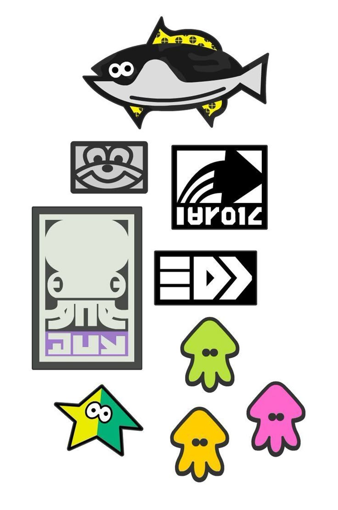
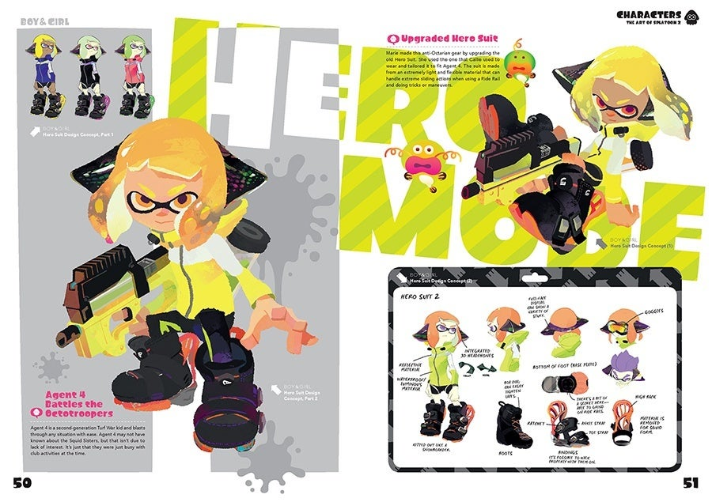

Experience
-
Student Project Visual Identity Design
Squid Academy 2025
Worked on a team project to develop a full visual identity for a
fictional local brand. Designed the logo, typography system, and
packaging concepts. Took the lead in color palette development and
presented the final work to peers and instructors.
-
Freelance Poster Design (Personal Commissions)
Inkopolis 2024–Present
Created custom digital posters for local Turf War teams and music
events. Focused on bold composition, high-energy visuals, and
personalized themes. Gained experience managing client input, feedback
loops, and short turnaround times.
-
Team Strategy Lead – Turf War Squads
Inkopolis Plaza 2023–2024
Led a small competitive Turf War team, coordinating strategies,
analyzing opponent patterns, and managing team morale. Built strong
leadership, teamwork, and quick decision-making skills in a fast-paced
environment.
-
Art Showcase Participant – Fresh Fest Student Exhibit
Squid Academy 2025
Selected to exhibit a personal series of ink-based illustrations
exploring motion and music. Designed accompanying prints and display
materials. Received positive feedback from instructors and guest
artists.

